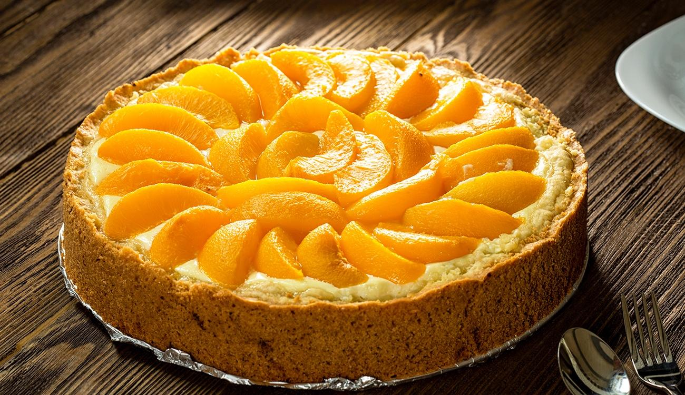

Torta Deliciosa de Pêssego
Ingredientes
Para a massa:
- 2 xícaras de farinha de trigo
- 1/2 xícara de manteiga sem sal
- 1/4 xícara de açúcar refinado
- 1 ovo
- 1 pitada de sal
- Água gelada (a gosto)
Para o recheio:
- 3 pêssegos grandes maduros, descascados e cortados em fatias
- 1/2 xícara de açúcar refinado
- 1 colher de sopa de suco de limão fresco
- 1 colher de chá de canela em pó
- 1/4 colher de chá de noz-moscada ralada
- 1/4 xícara de amêndoas picadas